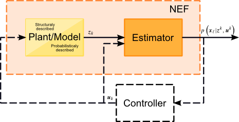
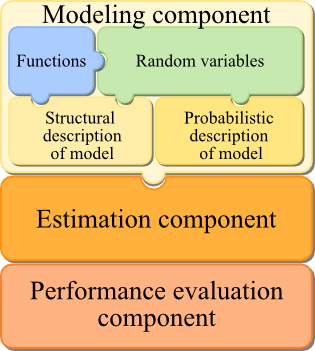

Product overview
Contents
NEF description
NEF is framework designed for nonlinear state estimation of discrete dynamical systems. The aim of this framework is to facilitate implementation, testing and use of various nonlinear state estimation methods. The main strength of the framework is its versatility due to the possibility of either structural or probabilistic description of the problem. As the toolbox is designed on the object oriented basis, further adding of user-specified nonlinear estimation algorithms is extremely easy.
The following picture demonstrates the task for which the NEF was designed.

The basic tasks that the NEF supports are basicaly these
- description and simulation of a plant/model,
- estimation of the state of the model,
- providing estimates in terms of probability density functions.
The most outstanding features of the framework are
- highly modular and extensible
- designed with support for natural description of the problem in mind (both structural and probailistic description of generaly time-varying systems)
- fast and easy estimation experiment setup
- facilitates implementation of filtering, prediction and smoothing tasks
- implements many of the popular nonlinear state estimators
The framework itself is divided into several modules each responsible for one task of the estimation experiment desing. The main modules are
- modeling componend - used for describing the model including description of time varying random variables and time-varying nonlinear functions
- estimation component - provides many well known estimators and mean for simple performace of all the basig estimation task
- performance evalutors component - offers function for omputing popular performace measures

Details concerning the individual components will be presented in separate part of this document.
System requirements
This toolbox is designed for use with MATLAB® environment at least version 2009b.
Licensing
- The NEF is copyrighted freeware provided by the Identification and Decision Making Research Group at the Departement of Cybernetics, University of West Bohemia.
- ANY TYPE OF REDISTRIBUTION AND/OR MODIFICATION OF THE TOOLBOX IS NOT PERMITTED!
- It is not permitted to use this software or any of its part for commercial purposes or include it or its part in commercial products without prior written consent of copyright holders represented by current maintainer of the NEF.
- In case of publication of results obtained using the software you are bound to either name the NEF with the web page of the toolbox and our institution (i.e.Departement of Cybernetics, University of West Bohemia) or cite at least one reference to recent publication on the NEF (to be found at http://nft.kky.zcu.cz/nef)
- THIS SOFTWARE IS PROVIDED BY THE COPYRIGHT HOLDERS AND CONTRIBUTORS "AS IS" AND ANY EXPRESS OR IMPLIED WARRANTIES, INCLUDING, BUT NOT LIMITED TO, THE IMPLIED WARRANTIES OF MERCHANTABILITY AND FITNESS FOR A PARTICULAR PURPOSE ARE DISCLAIMED. IN NO EVENT SHALL THE COPYRIGHT OWNER OR CONTRIBUTORS BE LIABLE FOR ANY DIRECT, INDIRECT, INCIDENTAL, SPECIAL, EXEMPLARY, OR CONSEQUENTIAL DAMAGES (INCLUDING, BUT NOT LIMITED TO, PROCUREMENT OF SUBSTITUTE GOODS OR SERVICES; LOSS OF USE, DATA, OR PROFITS; OR BUSINESS INTERRUPTION) HOWEVER CAUSED AND ON ANY THEORY OF LIABILITY, WHETHER IN CONTRACT, STRICT LIABILITY, OR TORT (INCLUDING NEGLIGENCE OR OTHERWISE) ARISING IN ANY WAY OUT OF THE USE OF THIS SOFTWARE, EVEN IF ADVISED OF THE POSSIBILITY OF SUCH DAMAGE.
- MATLAB is trademark of The MathWorks, Inc.